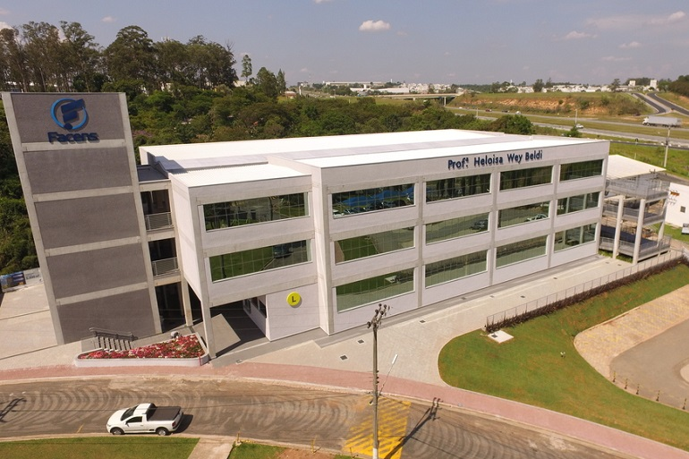

Explore Nossos Prédios
🏛️ Explore os Espaços da FACENS! Na FACENS, cada prédio foi pensado para transformar sua experiência acadêmica em algo único, desde salas de aula modernas até laboratórios equipados com tecnologia de ponta, tudo aqui foi planejado para oferecer o melhor ambiente de aprendizado possível.
💡 O campus conta com centros de inovação, espaços colaborativos, biblioteca completa, áreas de descanso e muito mais. Tudo isso em um ambiente sustentável e conectado com o futuro da educação.
🎓 Não é só estudar — é viver a FACENS! Aqui, você aprende, cria, inova e faz parte de uma comunidade que vive a tecnologia, conhecimento e crescimento pessoal.
Prédio A

Laboratórios de Ciências, Sala de Aula, Biblioteca.
Prédio B

Auditório, Sala de Reuniões, Escritórios Administrativos.
Prédio C

Centro de Informática, Sala de Estudos.
Prédio D
Centro de Informática, Sala de Estudos.
Prédio E
Centro de Informática, Sala de Estudos.
Prédio F
Centro de Informática, Sala de Estudos.
Prédio G
Centro de Informática, Sala de Estudos.
Prédio H
Centro de Informática, Sala de Estudos.
Prédio I
Centro de Informática, Sala de Estudos.
Prédio J
Centro de Informática, Sala de Estudos.
Prédio K
Centro de Informática, Sala de Estudos.
Prédio L
🏢 Prédio L - O Centro de Inovação e Tecnologia da FACENS
O Prédio L é um dos espaços mais completos e modernos de toda a FACENS. Com três andares além do térreo, esse prédio impressiona tanto pelo seu tamanho quanto pela sua infraestrutura tecnológica de ponta. É o principal ponto de encontro para os cursos ligados à tecnologia e engenharia, reunindo diversas salas de aula equipadas para disciplinas como Análise e Desenvolvimento de Sistemas, Engenharia de Computação, Engenharia Mecânica, Arquitetura de Dados, Fundamentos de Ciência de Dados, entre muitas outras ligadas ao universo da inovação.
No térreo, o prédio abriga diversos laboratórios de pesquisa e salas com computadores de alto desempenho, proporcionando aos alunos um ambiente ideal para o desenvolvimento de projetos acadêmicos, estudos e experiências práticas. Esses espaços são fundamentais para promover a conexão entre teoria e prática, incentivando a aplicação real do conhecimento adquirido em sala.
Além disso, o Prédio L também é palco de eventos institucionais, workshops, feiras acadêmicas e encontros de tecnologia. Graças à sua estrutura ampla e versátil, ele se torna o cenário ideal para momentos de troca de conhecimento, networking e apresentações de projetos.
Seja para assistir a uma aula, participar de um evento ou desenvolver um projeto inovador, o Prédio L é, sem dúvidas, um símbolo da proposta educacional moderna e conectada da FACENS.